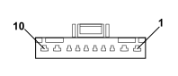

M001B BODY COMPUTER (FRONT)
- Path
- Electrical equipment > 3 CONNECTORS > M INTERMITTENT AND TIMED ELECTRONIC DEVICES > M001 BODY COMPUTER > M001B BODY COMPUTER (FRONT)
- Kind
- connector pinout (pin -> wire colour -> other end)
- Applies to
- engines: 1.1, 1.2 8v; all production periods
- Interactive page
- https://sloeber94.github.io/elrnDB-fPnd/en/#/169003396
Applies to: engines: 1.1, 1.2 8v; all production periods

Wiring | Colour |
|---|---|
GRIGIO (grey) |
Pin | Cable | Destination | |||
|---|---|---|---|---|---|
Sec.. | Colour | Node | Connect. | Pin | |
2 | 2,5 | N (black) | 19 | ||
3 | 1,5 | S (pink) | 1 | ||
4 | 1,5 | V (green) | 2 | ||
5 | 1 | ZB (violet with white stripe) | 2 | ||
6 | 0,5 | HG (grey with yellow stripe) | 11 | ||
6 | 0,5 | HG (grey with yellow stripe) | 11 | ||
7 | 1 | HN (grey with black stripe) | 1 | ||
8 | 1 | H (grey) | 1 | ||
9 | 2,5 | BR (white with red stripe) | 5 | ||
10 | 2,5 | A (light blue) | 1 | ||